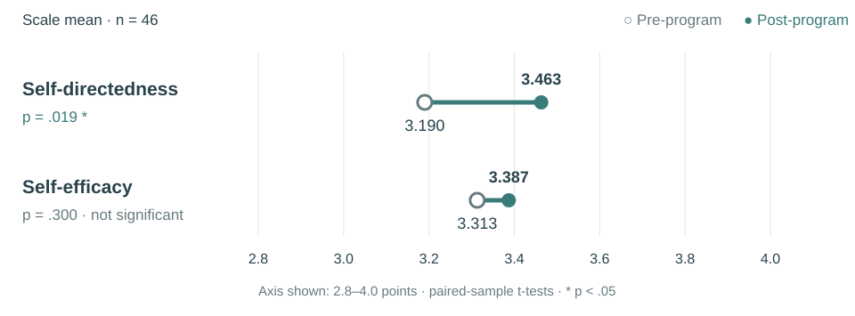
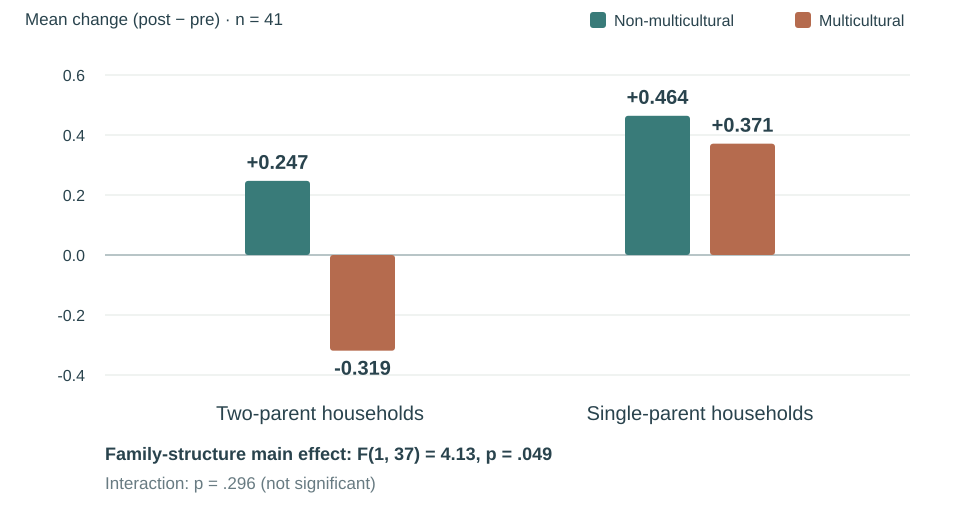
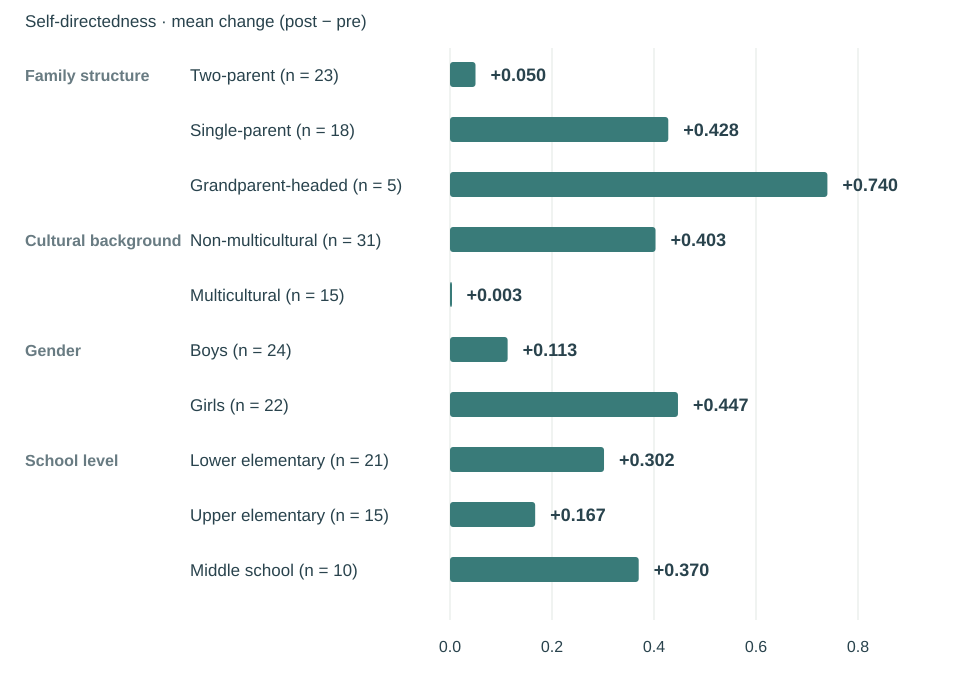
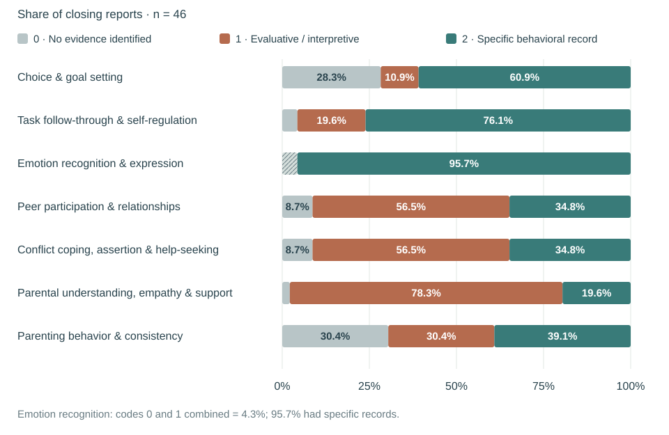

Yunho Kim
- Research Interests
- Academic Motivation, Intervention Development, MTSS, Family–School–Community Collaboration, Coaching
- Education
M.S., Industrial Psychology (Coaching Psychology), Kwangwoon University, 2024
B.S., Industrial & Organizational Psychology, Kwangwoon University, 2020Interdisciplinary Major in Leadership Coaching
- Technical Skills
Quantitative: SPSS · reliability and exploratory factor analysis · t tests · one-way, factorial, mixed, and repeated-measures ANOVA
Qualitative: semi-structured and focus group interviews (FGI) · needs assessment
Assessment: K-WISC-V, MMPI-2/A, TCI, HTP, KFD, SCT (under supervision) · behavioral observation · integrated reports
Programs: design and outcome evaluation of youth counseling and coaching programs · group facilitation · caregiver coaching
Youth, Families, and the Evidence of Change
01 · Overall pre–post change

46 completers · self-directedness p = .019; self-efficacy p = .30002 · Family structure × cultural background

Family-structure main effect p = .049 · interaction not significant03 · Change across subgroups

Descriptive mean changes · not subgroup significance tests04 · Evidence in closing reports

46 reports · documentation frequencies, not improvement ratesA retrospective evaluation of a homecare project for children and adolescents, combining corrected pre–post analyses with systematically coded closing reports. No comparison group; observed changes do not establish a causal program effect.